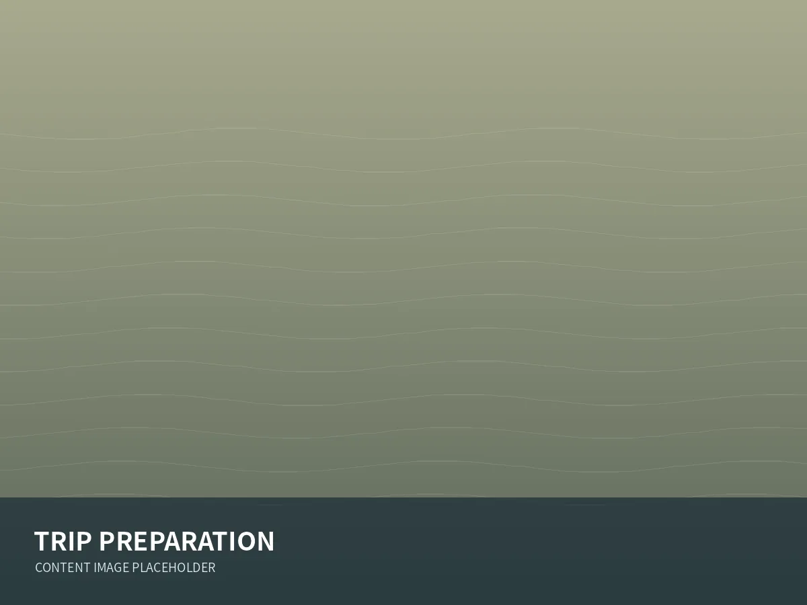
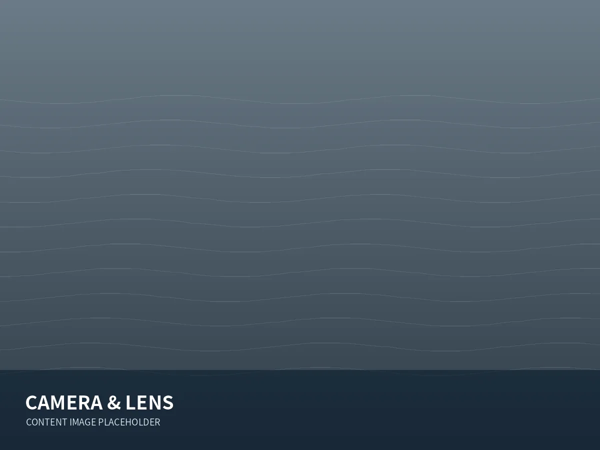
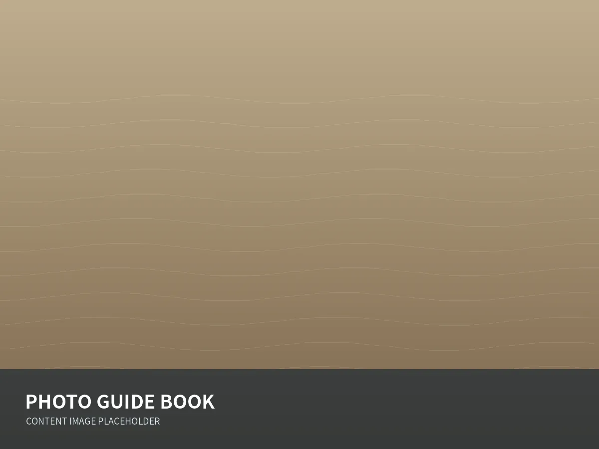

01 / PHOTO MAP
フォトマップ
「どこで何が撮れるか」を地図と写真で分かりやすく案内します。公開時は実際の撮影地点、駐車・立入情報、季節などを確認して掲載してください。
霧多布岬周辺
海・野生動物など。詳細情報を入力。
霧多布湿原周辺
湿原・花・野鳥など。詳細情報を入力。
浜中町の風景
酪農・海岸・朝夕景など。詳細情報を入力。
PHOTO GUIDE
フォトガイドブックの内容をWebでも使いやすく。撮影場所を探すところから、旅行準備、機材、撮影方法、マナーまでを一つにつなぎます。
01 / PHOTO MAP
「どこで何が撮れるか」を地図と写真で分かりやすく案内します。公開時は実際の撮影地点、駐車・立入情報、季節などを確認して掲載してください。
海・野生動物など。詳細情報を入力。
湿原・花・野鳥など。詳細情報を入力。
酪農・海岸・朝夕景など。詳細情報を入力。

02 / TRIP
浜中町へ来る前に確認したい情報を一か所にまとめます。

03 / GEAR
特定メーカーに偏りすぎない形で「どの程度の焦点距離があると撮りやすいか」「手ブレ補正や動物検出AFがどう役立つか」など、選び方を中心に掲載できます。
04 / TECHNIQUE
見つけ方、構図、シャッタースピード、連写、AF、露出、波の表現などを初心者にも分かる形で整理します。
05 / MANNER
野生動物と地域の環境を守りながら撮影を楽しむためのルールを、目立つ位置に掲載します。実際の運用ルールに合わせて必ず確認・更新してください。

06 / PHOTO GUIDE BOOK
写真展で配布する冊子をPDF化してアーカイブできます。PDF完成後に `downloads/hamanaka-photo-guide.pdf` を配置し、下のリンクを書き換えてください。
PDF版は準備中